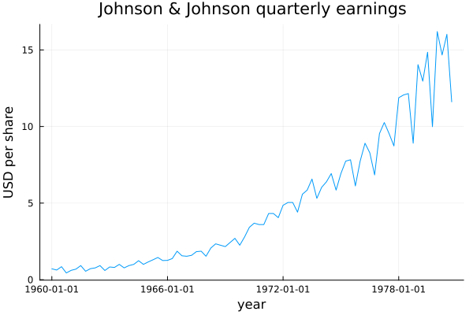
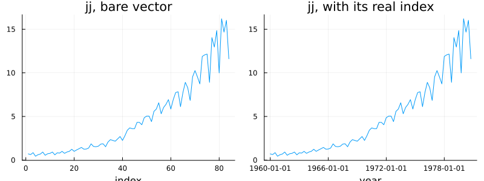
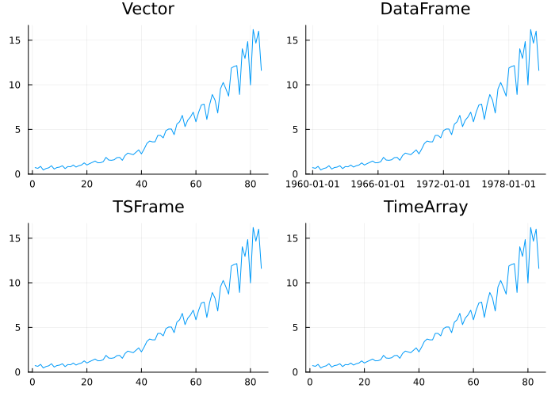
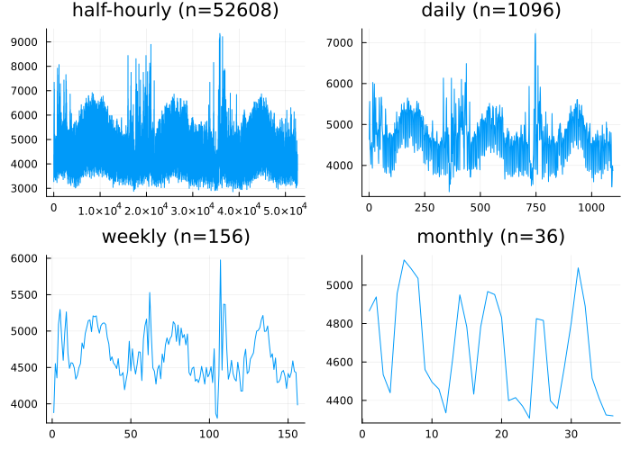
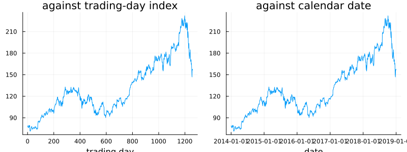
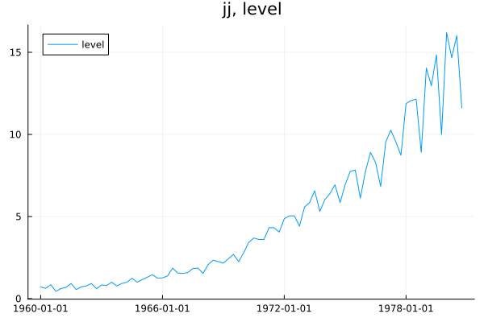
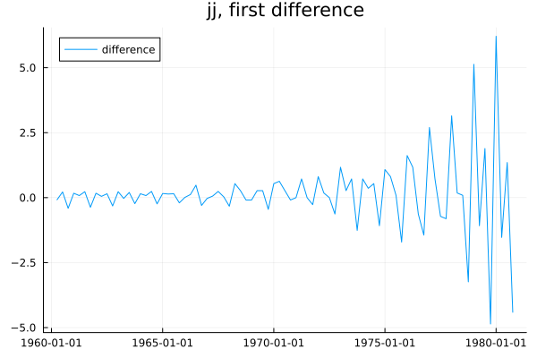

What a Time Series Is
using TSAnalytics, Plots
jj = dataset("jj")
plot(jj.date, jj.value; title="Johnson & Johnson quarterly earnings",
xlabel="year", ylabel="USD per share", legend=false)
This is the series from Chapter 1, and it is worth returning to with a different question in mind. To draw this picture at all, what did the computer actually need to know? Not just the eighty-four numbers — plot those alone and you get a shape, not this shape. It needed to know that the observations are quarterly, that the first one falls in the first quarter of 1960, and that the spacing between them never varies. Take away any one of those three facts and the picture either changes or becomes impossible to draw honestly. That trio — values, an index, and an implied claim about the spacing between observations — is what a time series actually is, underneath whichever container happens to be holding it. The rest of this chapter is about how differently various systems choose to store that trio, and what gets lost when they choose badly.
A vector should be enough
The obvious attempt: surely a plain Vector{Float64} already is a time series?
p1 = plot(jj.value; title="jj, bare vector", xlabel="index", legend=false)
p2 = plot(jj.date, jj.value; title="jj, with its real index", xlabel="year", legend=false)
plot(p1, p2; layout=(1,2), size=(800,300))
Identical shapes. One x-axis runs 1 to 84; the other runs 1960 to 1980. This is exactly why the mistake is easy to make — nothing about the picture on the left is wrong. What has quietly disappeared is everything calendar-shaped. You cannot ask the bare vector which entry is a December quarter. You cannot line it up against a second series that happens to start in a different year. You cannot say what "one year ahead" means, because a bare vector has no unit of time attached to its own length. The vector is entirely sufficient for plotting and close to useless for almost everything else this book will ask of it, and the plot alone never tells you which situation you are in.
Index, values, spacing
Real containers hold this trio in genuinely different ways, and this package has to work with all of them.
using DataFrames, TSFrames, TimeSeries
df = DataFrame(Date=jj.date, Value=jj.value)
tsf = TSFrame(df, :Date)
ta = TimeArray(jj.date, jj.value, [:Value])
p1 = plot(jj.value; title="Vector", legend=false)
p2 = plot(df.Date, df.Value; title="DataFrame", legend=false)
p3 = plot(tsf[:, :Value]; title="TSFrame", legend=false)
p4 = plot(values(ta); title="TimeArray", legend=false)
plot(p1, p2, p3, p4; layout=(2,2), size=(700,500))
Four types, one picture repeated four times, because the underlying data is identical in all four. The types differ in what they let a program do next — a TSFrame knows how to align itself against another TSFrame; a bare Vector knows nothing beyond its own length — not in what they fundamentally contain. A package facing this choice has two routes: convert everything to one canonical type the moment it arrives, which is roughly what R and Python's ecosystems do, or accept every container on its own terms and dispatch on it. This package takes the second route, and tsvalues/tsindex are the whole of how.
acf(tsf[:, :Value], 1:3).values == acf(values(ta), 1:3).values == acf(df.Value, 1:3).valuestrueThere is no conversion layer here, no canonical internal type, no as_ts() function scattered through the API. tsvalues is simply two ordinary Julia methods — identity on an AbstractVector{<:Real}, collect on anything else — and every container above already returns a plain Vector from its own native column accessor (tsf[:, :Value], values(ta), df.Value) before this package's code ever runs. Multiple dispatch means there is nothing to add every time a new container type shows up; it already works with one written after this package existed, provided that container's own accessor returns something iterable.
Where the tidy story breaks
d = dataset("vic_elec")
using Dates
times = DateTime.(d.Time, dateformat"yyyy-mm-dd HH:MM:SS")
days = Date.(times)
udays = unique(days)
daily = [sum(d.Demand[days .== dy]) / count(days .== dy) for dy in udays]
weeks = Dates.year.(udays) .* 100 .+ Dates.week.(udays)
uweeks = unique(weeks)
weekly = [sum(daily[weeks .== w]) / count(weeks .== w) for w in uweeks]
months = Dates.year.(udays) .* 100 .+ Dates.month.(udays)
umonths = unique(months)
monthly = [sum(daily[months .== mn]) / count(months .== mn) for mn in umonths]
p1 = plot(d.Demand; title="half-hourly (n=$(length(d.Demand)))", legend=false)
p2 = plot(daily; title="daily (n=$(length(daily)))", legend=false)
p3 = plot(weekly; title="weekly (n=$(length(weekly)))", legend=false)
p4 = plot(monthly; title="monthly (n=$(length(monthly)))", legend=false)
plot(p1, p2, p3, p4; layout=(2,2), size=(700,500))
This is one series — three years of Victorian electricity demand, 2012 to 2014 — aggregated four ways: 52,608 half-hours, 1,096 days, 156 weeks, 36 months. Look at these four panels without the labels and they could be four unrelated series. At half-hourly resolution the daily cycle dominates completely and the annual pattern is invisible inside the noise of it. At monthly resolution the annual pattern is obvious and the daily cycle has not been smoothed away — it is simply gone, because aggregating to a monthly mean destroys any information at a finer scale than a month.
Frequency, then, is not a property of the phenomenon being measured. It is a choice made once when the data is recorded, and a second choice made every time it is aggregated afterwards, and both choices decide in advance which questions can still be asked. Worth sitting with before Chapter 13 asks you to decompose a series into trend, season and remainder — "the seasonal component" is not a well-defined phrase until the frequency it is seasonal at has been settled.
counts = Dict{Date,Int}()
for dy in days
counts[dy] = get(counts, dy, 0) + 1
end
odd_days = sort([dy for (dy,c) in counts if c != 48])
odd_days6-element Vector{Dates.Date}:
2012-04-01
2012-10-07
2013-04-07
2013-10-06
2014-04-06
2014-10-05vic_elec is described, reasonably, as half-hourly. 1,090 of its 1,096 days have exactly 48 half-hours in them. Six do not — three days with 50, three with 46, and every single one of them is an Australian daylight-saving transition (1 April 2012, 7 April 2013, 6 April 2014 gain an hour when the clocks go back; 7 October 2012, 6 October 2013, 5 October 2014 lose one when they go forward). This is not a data-quality problem to be cleaned up. The data is correct — those days genuinely do have 46 or 50 half-hours of electricity demand in them — and the word "half-hourly" was always a slight simplification of what is really going on.
This is exactly where a representation like R's ts object runs out of road. An object that stores only a start, an end and a frequency computes every timestamp as start + k/frequency, which by construction can never produce a day with 50 half-hours. Handed this series, it would silently misalign every observation from 1 April 2012 onward, and nothing about the object itself would ever say so.
gafa = dataset("gafa_stock")
aapl_idx = findall(==("AAPL"), gafa.Symbol)
close = gafa.Close[aapl_idx]
dates = Date.(gafa.Date[aapl_idx])
p1 = plot(close; title="against trading-day index", xlabel="trading day", legend=false)
p2 = plot(dates, close; title="against calendar date", xlabel="date", legend=false)
plot(p1, p2; layout=(1,2), size=(800,300))
Twelve hundred and fifty-eight Apple closing prices, plotted two ways. Against a trading-day index the line is continuous, no breaks anywhere. Against calendar dates it is riddled with small gaps — weekends, and the handful of market holidays scattered through each year (checking the actual gaps: 985 one-day steps between consecutive trading days, 227 three-day weekend steps, 34 four-day long-weekend steps, and 11 two-day steps from mid-week holidays). Both pictures are legitimate and they answer different questions. Ask how the price moved over five trading sessions and the first is right. Ask how the price relates to something measured on the calendar — weather, a policy announcement, a festival — and only the second one works, because "five trading sessions" and "five calendar days" are not the same interval and treating them as interchangeable produces a plausible, wrong answer, which by this point in the book should be a familiar villain.
try
TSAnalytics.tsvalues([1.0, missing, 3.0])
catch e
sprint(showerror, e)
end"MethodError: Cannot `convert` an object of type Missing to an object of type Float64\nThe function `convert` exists, but no method is defined for this combination of argument types.\n\nClosest candidates are:\n convert(::Type{Float64}, !Matched::Measures.AbsoluteLength)\n @ Me" ⋯ 252 bytes ⋯ "izationBase ~/.julia/packages/VectorizationBase/F4R96/src/base_defs.jl:201\n convert(::Type{T}, !Matched::CommonWorldInvalidations.Despec4) where T<:Real\n @ CommonWorldInvalidations ~/.julia/packages/CommonWorldInvalidations/werPC/src/CommonWorldInvalidations.jl:111\n ...\n"TSAnalytics.tsvalues([1.0, NaN, 3.0])3-element Vector{Float64}:
1.0
NaN
3.0Two genuinely different missing-data situations, and it matters which one you are in. Hand this package a series containing Julia's missing and it refuses immediately, with a plain type error, rather than guessing what you meant. Hand it NaN instead and it passes the value through untouched — which, handed to a plotting call, shows up as an honest gap in the line, because that is what a plotting library does with a NaN by default. Try to compute something from a series that still has a NaN in it, though, and the functions that need every observation say so explicitly rather than quietly producing a wrong number:
try
acf([1.0, NaN, 3.0, 4.0, 5.0], 1:2)
catch e
sprint(showerror, e)
end"ArgumentError: acf: NaN present (no missing-data policy implemented yet; see handoff/stage-1.3-acf-pacf-handoff.md)"Nothing in this chain is silent. A missing value is rejected on arrival; a NaN value is visible in the plot and rejected the moment a real calculation is attempted. There is no third path here where a gap quietly becomes a shorter, mis-spaced series that still looks entirely healthy — which is the genuinely dangerous failure mode, because a series that has silently lost an observation and closed the gap behind it looks exactly like a series that never had a gap at all.
The two-representations problem
try
using Dates
Date("1960.25")
catch e
sprint(showerror, e)
end"ArgumentError: Unable to parse date time. Expected directive Delim(-) at char 5"Take jj's own raw storage — its source CSV, converted years ago from R's astsa package, literally contains the strings "1960", "1960.25", "1960.5" for its time column — and hand one of those strings to something expecting a calendar date, and the result is an immediate, honest error, not nonsense silently accepted. That failure is the whole of this chapter's argument made concrete.
Two ecosystems answer "how do I store time?" in genuinely incompatible ways. R's ts object stores three numbers — a start, an end, a frequency — and computes the time axis from them: 1960.25 means "the second quarter of 1960" purely by the convention that start + k/frequency is being interpreted as a decimal year. Nothing in the object itself records that convention; a reader has to already know it. A tsibble, by contrast, stores an explicit timestamp on every single observation, which is why vic_elec's own raw file carries strings like "2012-01-01 00:30:00" rather than a number that needs decoding. Neither choice is wrong. R's is compact, fast, and makes irregular spacing structurally impossible to represent by accident — a genuine virtue when the data really is perfectly regular. The tsibble choice is larger on disk and handles a 50-half-hour daylight-saving day without any special-casing at all, because every observation already carries its own honest timestamp.
jj_again = dataset("jj")
jj_again.date[1:3]3-element Vector{Dates.Date}:
1960-01-01
1960-04-02
1960-07-02This package's own loader already bridges both conventions rather than picking a side: hand it either a decimal-year astsa file or a timestamped tsibble file, and dataset hands back real Dates either way — the three values above are genuine Date objects, not the raw 1960/1960.25/1960.5 strings the source file actually contains on disk. That conversion is not free, though, and it is worth knowing where it draws its own line: a handful of the bundled series (a seismic trace's sample index, a nucleotide sequence position) use a plain sequential number that is not calendar time at all, and the loader deliberately leaves those alone rather than inventing a calendar date for a value that was never one. Knowing which situation a given series is in is exactly the kind of thing tsindex exists to make explicit rather than assumed.
India's financial year runs from April to March, not January to December. A quarterly series published by MoSPI has its first quarter in April — and a package, or an analyst, that assumes calendar quarters will label every single observation wrongly, not approximately but by an entire quarter. The values themselves are perfectly fine; it is the index that is wrong, and nothing in a plot of the series will ever say so. The same problem recurs for any market whose fiscal year is not the Gregorian one, and it is, underneath everything, a pure indexing problem of exactly the kind this chapter has been about throughout.
Where this leaves you
plot(jj.date, jj.value; title="jj, level", label="level")
plot(jj.date[2:end], diff(jj.value); title="jj, first difference", label="difference")
No explanation yet. The second picture is what Chapter 3 is about, and differencing a series that will not sit still is the first thing almost anyone does to real data, once they have a container that can actually hold it properly.